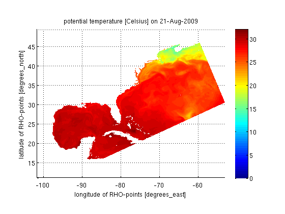

DEMO9 - Like demo8 but uses 'struct' sytax to access a variable
and it's coordinate axis data
Contents
Starting DEMO9 ----------------------------------------------------------
Demonstration of subsetting a CF convention dataset
echo('on') url='http://geoport.whoi.edu/thredds/dodsC/coawst_2_2/fmrc/coawst_2_2_best.ncd'; ds = cfdataset(url);
url='http://geoport.whoi.edu/thredds/dodsC/coawst_2_2/fmrc/coawst_2_2_best.ncd';
ds = cfdataset(url);
%% Grab the variable of interest. No data is being read yet.
sz = ds.size('temp');
Grab the variable of interest. No data is being read yet.
sz = ds.size('temp');
%% Grab a subset of the data. Data is now being pulled across the network
t = ds.struct('temp', [sz(1) sz(2) 1 1], [sz(1) sz(2) sz(3) sz(4)]);
Grab a subset of the data. Data is now being pulled across the network
t = ds.struct('temp', [sz(1) sz(2) 1 1], [sz(1) sz(2) sz(3) sz(4)]);
%% Make a pretty plot. Note the call to 'squeeze'. This removes % singleton dimensions. figure;
Make a pretty plot. Note the call to 'squeeze'. This removes
singleton dimensions.
figure; surf(t.lon_rho, t.lat_rho, double(squeeze(t.temp))) shading('interp'); view(2) axis('equal') xatt = ds.attributes('lon_rho'); xname = value4key(xatt, 'long_name'); xunits = value4key(xatt, 'units'); xlabel([xname ' [' xunits ']'],'interpreter','none'); yatt = ds.attributes('lat_rho'); yname = value4key(yatt, 'long_name'); yunits = value4key(yatt, 'units'); ylabel([yname ' [' yunits ']'],'interpreter','none'); zatt = ds.attributes('temp'); zname = value4key(zatt, 'long_name'); zunits = value4key(zatt, 'units'); ztime = ds.time('time1', t.time1); title([zname ' [' zunits '] on ' datestr(ztime(1))],'interpreter','none'); colorbar shg echo('off') % Ending DEMO9 -----------------------------------------------
surf(t.lon_rho, t.lat_rho, double(squeeze(t.temp)))
shading('interp');
view(2)
axis('equal')
xatt = ds.attributes('lon_rho');
xname = value4key(xatt, 'long_name');
xunits = value4key(xatt, 'units');
xlabel([xname ' [' xunits ']'],'interpreter','none');
yatt = ds.attributes('lat_rho');
yname = value4key(yatt, 'long_name');
yunits = value4key(yatt, 'units');
ylabel([yname ' [' yunits ']'],'interpreter','none');
zatt = ds.attributes('temp');
zname = value4key(zatt, 'long_name');
zunits = value4key(zatt, 'units');
ztime = ds.time('time1', t.time1);
title([zname ' [' zunits '] on ' datestr(ztime(1))],'interpreter','none');
colorbar
shg
echo('off') % Ending DEMO9 -----------------------------------------------
